MIT 6.828 Lab 1
MIT 6.828 算是操作系统的经典课程，其中要求完成一个JOS的操作系统。在这之前，需要完成一些环境的安装。
前期准备
我的系统是Ubuntu 14.04 64位，在虚拟机中运行的。在Lab 1中提到了安装实验的方法。考虑到国内的网络情况，建议使用ss配合proxychains在终端中使用
|
|
如果直接make可能会出现undefined reference to '__udivdi3'的问题，解决方案：
|
|
如果没装qemu，这里需要安装qemu，在课程的Tools页面中，提到了QEMU最好安装修改版，考虑到git clone http://web.mit.edu/ccutler/www/qemu.git -b 6.828-2.3.0这个不好clone，建议使用
|
|
在执行 ./configure --disable-kvm [--prefix=PFX] [--target-list="i386-softmmu x86_64-softmmu"] （PFX为安装路径，可以省略）
时，可能会出现几种情况：
- ERROR: zlib check failed
Make sure to have the zlib libs and headers installed.
解决: sudo apt-get install zlib1g-dev
- ERROR: glib-2.12 gthread-2.0 is required to compile QEMU
解决: sudo apt-get install libglib2.0-dev
- ERROR: pixman >= 0.21.8 not present. Your options:
(1) Preferred: Install the pixman devel package (any recent distro should have packages as Xorg needs pixman too). (2) Fetch the pixman submodule, using: git submodule update --init pixman
解决: sudo apt-get install libpixman-1-dev
还有一个找了很久解决方案的错误:
|
|
其实解决起来很简单，在Makefile文件最后加上一行 QEMU_CFLAGS+=-w 就可以了。
之后运行 make && make install ,这里可能会出现一个权限不够的坑，建议先提权 sudo -s。
至此，make会出现：
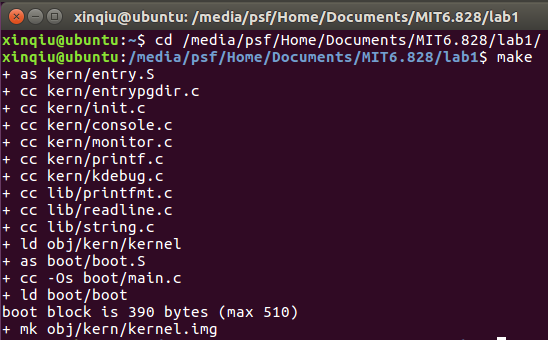
生成了一个 kernel.img 的镜像，执行 make qemu 就会用 qemu 去运行这个镜像
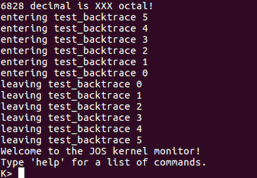
倒是我这里没看到’Booting from Hard Disk…’，另外前面还有一堆信息。输入 help 和 kerninfo 都有正常信息出现，所以应该环境什么应该算是搭建好了。
Part 1: PC Bootstrap
PC物理地址空间
|
|
早期基于16位Intel 8088处理器只能操作1MB物理内存，因此物理地址空间起始于0x00000000到0x000FFFFF，其中640KB为 Low memory，这只能被随机存储器(RAM)使用。
从 0x000A0000 到 0x000FFFFF 的384KB留着给特殊使用，例如作为视频显示缓存或者储存在非易失存储器的硬件。从 0x000F0000 到 0x000FFFFF 占据64KB区域的部分是最重要的BIOS。BIOS的功能这里就不细说了。
现在的x86处理器支持超过4GB的物理RAM，所以RAM扩展到了0xFFFFFFFF。当然，BIOS也流出了开始的32位寻址空间为了让32位的设备映射。JOS这里只用开始的256MB，所以假设PC只有32位地址空间。
BIOS
在一个终端中输入 make qemu-gdb ， 另一个终端输入 make gdb 。开始调试程序。
[f000:fff0] 0xffff0: ljmp $0xf000,$0xe05b
是GDB反汇编出的第一条执行指令，这条指令表面了：
- IBM PC 执行的起始物理地址为 0x000ffff0
- PC 的偏移方式为 CS = 0xf000，IP = 0xfff0
- 第一条指令执行的是 jmp指令，跳转到段地址 CS = 0xf000，IP = 0xe05b
QEMU模拟了8088处理器的启动，当启动电源，BIOS最先控制机器，这时还没有其他程序执行，之后处理器进入实模式也就是设置 CS 为 0xf000，IP 为 0xfff0。在启动电源也就是实模式时，地址转译根据这个公式工作：物理地址 = 16 * 段地址 + 偏移量。所以 PC 中 CS 为 0xf000 IP 为 0xfff0 的物理地址为：
|
|
0xffff0 在 BIOS (0x100000) 的结束地址之前。
当BIOS启动，它设置了一个中断描述符表并初始化多个设备比如VGA显示器。在初始化PCI总线和所有重要的设备之后，它寻找可引导的设备，之后读取 boot loader 并转移控制。
Part 2: The Boot Loader
接下来是512 byte区域的扇区，它是硬盘最小调度单位，每次读或写操作都至少是一个扇区，并且还会进行对齐。BIOS加载引导扇区到内存中是从物理地址0x7c00到0x7dff，然后使用jmp指令设置 CS:IP 为 0000:7c00。因此 boot loader 不能超过512字节，它执行两个功能：
boot loader 切换处理器从实模式到保护模式，只有这样才能访问大于1MB的物理地址空间。
boot loader 从硬盘中读取内核。
加载Boot
Exercise 3
通过 b *0x7c00 设置断点，接着 c 运行到断点处，使用 x/i 来查看当前的指令。
At what point does the processor start executing 32-bit code? What exactly causes the switch from 16- to 32-bit mode? 在哪执行了32位代码？
[ 0:7c2d] => 0x7c2d: ljmp $0x8,$0x7c32这条指令之后，也就是boot.S中的ljmp $PROT_MODE_CSEG, $protcseg，地址符号就变成 0x7c32 了。What is the last instruction of the boot loader executed, and what is the first instruction of the kernel it just loaded?最后一条 boot loader 指令，第一条内核指令？
boot loader 最后一步是加载kernel，所以在
boot/main.c中可以找到((void (*)(void)) (ELFHDR->e_entry))();这行代码，上面的注释call the entry point from the ELF header表明这是准备读取ELF头。
通过objdump -x obj/kern/kernel可以查看kernel的信息，其中开头就有start address 0x0010000c，通过b *0x10000c然后在c能得到执行的指令是movw $0x1234,0x472，当然在kern/entry.S中也能找到这个指令。Where is the first instruction of the kernel?
同上一条的问题，存在kern/entry.S中。
How does the boot loader decide how many sectors it must read in order to fetch the entire kernel from disk? Where does it find this information?
关于查看kernel信息的，通过
objdump -h obj/kern/kernel可以得出相关信息。
接下来就可以来完成 Exercise 3。设置一个断点在地址0x7c00处，这是boot sector被加载的位置。然后让程序继续运行直到这个断点。跟踪/boot/boot.S文件的每一条指令，同时使用boot.S文件和系统为你反汇编出来的文件obj/boot/boot.asm。你也可以使用GDB的x/i指令来获取去任意一个机器指令的反汇编指令，把源文件boot.S文件和boot.asm文件以及在GDB反汇编出来的指令进行比较。
追踪到bootmain函数中，而且还要具体追踪到readsect()子函数里面。找出和readsect()c语言程序的每一条语句所对应的汇编指令，回到bootmain()，然后找出把内核文件从磁盘读取到内存的那个for循环所对应的汇编语句。找出当循环结束后会执行哪条语句，在那里设置断点，继续运行到断点，然后运行完所有的剩下的语句。
首先查看boot.S文件，在开头可以看到
|
|
cld 是串操作指令，用来操作方向标志位DF，使DF=0。
|
|
将DS、ES、SS寄存器清零。
|
|
开启A20，关于为什么要开A20,可以看知乎:OS boot 的时候为什么要 enable A20？。
inb $0x64,%al 把0x64端口(8042键盘控制器)的状态写入al中（inb代表IO端口读）, 之后 testb $0x2,%al 判断al的第二位是否为0，不为0就循环执行seta20.1。这里第二位代表输入缓冲区是否满了。接着0xd1放入0x64端口。最后将0xdf放入0x60端口，代表开启A20地址线了。
|
|
切换到保护模式后，加载GDT(Global Descriptor Table)，接着修改了cr0寄存器的值，$CR0_PE_ON值为0x1，代表启动保护模式的flag标志。
|
|
也就是 0x7c2d: ljmp $0x8,$0x7c32 跳转到了32位代码段。
|
|
修改了这些寄存器的值。
|
|
设置栈指针，接着开始调用bootmain函数。
|
|
首先做进入函数的准备工作
|
|
接着调用readseg函数，这个函数有3个参数，第一个是物理地址，第二个是页的大小，第三个是偏移量。
0x7ceb: shr $0x9,%edi 执行了 offset = (offset / SECTSIZE) + 1; 这条代码前面的除法部分，得出扇区号。
0x7cee: add %ebx,%esi 执行了 end_pa = pa + count; 计算出这个扇区结束的物理地址。
0x7cf0: inc %edi 执行了 offset = (offset / SECTSIZE) + 1; 中的加1。
0x7cf1: and $0xfffffe00,%ebx 执行了 pa &= ~(SECTSIZE - 1);。
|
|
执行 while (pa < end_pa) 这个循环判断语句。
之后几条汇编是为readsect函数做准备，这个函数是读取扇区内容的。
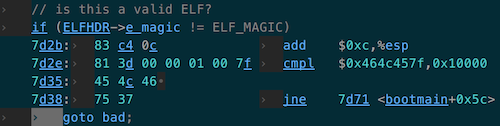
判断 ELFHDR->e_magic != ELF_MAGIC 这个条件。
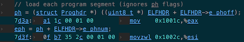
加载程序段由这几个部分汇编构成
|
|
之后循环调用readseg函数，将Program Header Table中表项读入内存。
最后一步就是
|
|
至此，Exercise 3算是走了一遍过程。
加载内核
Exercise 4
阅读 K&R 的 The C Programming Language， 理解 pointers.c.
|
|
结果是 1: a = 0x7fff5fbff810, b = 0x100600000, c = 0x100000000
a是数组，所以输出的0x7fff5fbff810是数组a的首地址。b是指针，指向malloc分配的空间的起始地址0x100600000。c是未定义的指针。
|
|
c = a; 让指针c指向a指向的地址。先是for循环，给数组a赋值为100、101、102、103。因为c现在和a指向同一区域，所以c[0]修改的是数组a的第一个元素，所以结果是 2: a[0] = 200, a[1] = 101, a[2] = 102, a[3] = 103.
|
|
三种修改数组中值的方法，其中第三种没怎么见过，有点像汇编里地址偏移的方式，3[c]就是c的地址偏移到第三个元素的地址，所以输出为 3: a[0] = 200, a[1] = 300, a[2] = 301, a[3] = 302.
|
|
移动指针指向了数组的第二个元素，所以输出为 4: a[0] = 200, a[1] = 400, a[2] = 301, a[3] = 302.
|
|
c = (int *) ((char *) c + 1); 这一行代码先将c强制转型为char指针，接着指针加1，再强转回int指针。一步一步来看，首先可以确定在执行这行代码之前，c的地址为 0x7fff5fbff814(因为系统是64位的，其实地址为 0x00007fff5fbff814，只不过前面的0省略了)，所以强转为char指针后加1得到的地址为 0x7fff5fbff815，因为char只占一个字节。因为c原来值为400，也就是十六进制的0x190.在c强转之前，打印 (char ) c 的地址为 0x7fff5fbff814，查看 (char *) c 的值为 ffffff90。这里要说明一下，为什么90前面都是ffffff，这不是fff团对单身狗的报复，而是
|
|
中，%x 将值强转为unsigned int，unsigned int在我的系统中占4个字节。所以打印出来有8位。用 %c 可以得到真正这个地方的值，只不过是八进制的。当然查看这个值最方便的还是声明个变量，然后在Xcode打断点进行查看。声明一个变量 char *p= (char *)c;, 使用 p++ 进行单步调试，可以查看 *p 的值。
|
|
500的十六进制是0x1F4, 因为char指针加1使指针指向 0x7fff5fbff815，所以修改其值为0xF4，0x7fff5fbff816为0x1，0x7fff5fbff818为0x0，所以a[1]值变为0x1F490=128144，a[2]为0x100=256。所以输出 a[0] = 200, a[1] = 128144, a[2] = 256, a[3] = 302。
|
|
b是int指针，所以a + 1即a的地址加上sizeof(int *)也就是4，所以指向a[1]。而c参考上一段的介绍，可知道是在char指针情况下进行加1，所以地址偏移1。所以输出 6: a = 0x7fff5fbff810, b = 0x7fff5fbff814, c = 0x7fff5fbff811。
接着就可以来学习内核。为了理解 boot/main.c， 需要了解ELF二进制文件。编译并链接比如JOS内核这样的C程序，编译器会将源文件(.c)转为包含汇编指令的目标文件(.o)。接着链接器把所有的目标文件组合成一个单独的二进制镜像（binary image），比如 obj/kern/kernel，这种文件就是ELF(是可执行可链接形式的缩写)。
当前只需要知道，可执行的ELF文件由带有加载信息的头，多个程序段表组成。每个程序段表是一个连续代码块或者数据，它们要被加载到内存具体地址中。boot loader 不修改源码和数据，直接加载到内存中并运行。
ELF开头是固定长度的 ELF头，之后是一个可变长度的程序头，它列出了需要加载的程序段。ELF头的定义在 inc/elf.h 中。主要学习以下3个程序段：
- .text: 程序执行指令
- .rodata:只读数据，比如ASCII字符串
- .data: 存放程序初始化的数据段，比如有初始值的全局变量。
当链接器计算程序内存布局时，会在内存里紧挨着.data段的.bss段中保留空间给未初始化的全局变量。C规定未初始化的全局变量为0。因此没必要在ELF的.bss段储存内容，链接器只储存了.bss段的地址和大小。
使用 objdump -h obj/kern/kernel 可以查看ELF头的相关信息。
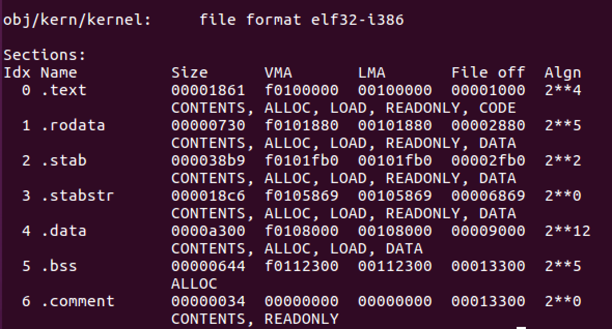
重点关注 .text段 的VMA(链接地址)和LMA(加载地址)，段的加载地址即加载进内存的地址。段的链接地址就是这个段预计在内存中执行的地址。链接程序有多种编码链接地址的方法。通常链接和加载的地址是一致的。查看boot loader的 .text段
|
|
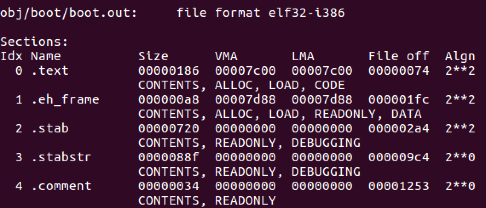
boot loader使用 ELF程序头(Program Headers) 确定如何加载段。程序头指明ELF中哪部分加载进内存和其所在的地址。使用一下命令查看
|
|
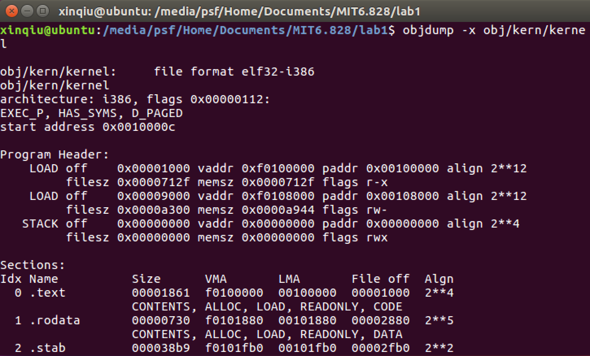
其中Program Headers下面列出的程序头中，开头的LOAD代表已经加载到内存中了，另外显示出了虚拟地址(vaddr)，物理地址(paddr)以及存放区域的大小(memsz和filesz)。
回到 boot/main.c， ph->p_pa是每个程序头包含的段目的物理地址。
BIOS把引导扇区加载到内存地址0x7c00，这也就是引导扇区的加载地址和链接地址。在 boot/Makefrag 中，是通过传 -Ttext 0x7C00 这个参数给链接程序设置了链接地址，因此链接程序在生成的代码中产生正确的内存地址。
Exercise 5
修改 boot/Makefrag 让其加载地址出错。查看这个文件
|
|
可以发现 -Ttext 后面的参数就是入口地址。如果把这个值修改为0x8C00，保存后回到lab1文件夹下进行make，查看 obj/boot/boot.asm 会发现，开头
|
|
可以发现起始地址从原来的 00007c00 变为 00008c00。虽然此时在0x7c00处打断点然后运行时正常的，但是继续si以后会在 [ 0:7c2d] => 0x7c2d: ljmp $0x8,$0x8c32 出循环，同时qemu端口出现了错误。因为不能ljmp到$0x7c32而是调到了$0x8c32，所以无法执行正确的指令。查看 boot.asm 可以知道上面这个指令是 ljmp $PROT_MODE_CSEG, $protcseg，是为了进入32位模式的。
除了段信息，ELF头中的e_entry字段也很重要。这个字段保存了程序入口点(entry point)的链接地址，也就是程序执行的text字段中的内存地址。使用一下命令查看objdump -f obj/kern/kernel
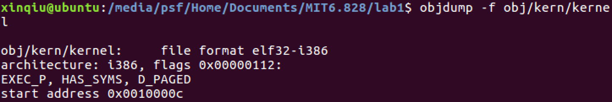
Exercise 6
使用GDB的 x/Nx ADDR 可以打印内存地址ADDR的 N 个字。字的大小分情况的，GDB中一个字是两个字节。
查看BIOS启动时0x00100000处的8歌字，然后继续到boot loader进入内核的位置，再查看，发现8个字的内容不同。
现在0x7c00处打断点，然后运行到断点处，使用 x/8x 0x100000 可以看到
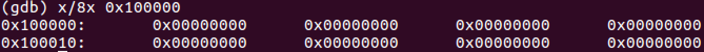
根据之前的看到程序入口点是 0x10000c ，所以在 0x10000c 处打断点运行，同样可以看到
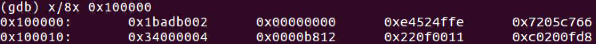
使用 x/10i 0x100000 会看到
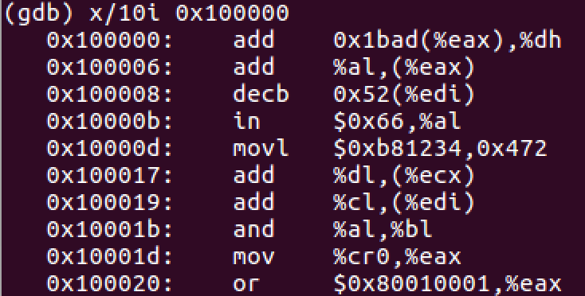
应该能感觉到 0x100000 处存放的其实就是程序指令段，也就是说 bootmain 函数会把内核的程序段送到内存 0x100000 处。
Part 3: The Kernel
使用虚拟内存
boot loader 的链接地址和加载地址是一样的，然而 kernel 的链接地址和加载地址有些差异。查看 kern/kernel.ld 可以发现内核地址在 0xF0100000。
操作系统内核通常被链接并且运行在非常高的虚拟地址，比如文件里看到的 0xf0100000，为了让处理器虚拟地址空间的低地址部分给用户程序使用。
许多机器没有地址为 0xf0100000 的物理内存，所以内核不能放在那儿。因此使用处理器内存管理硬件将虚拟地址 0xf0100000 (内核希望运行的链接地址)映射到物理地址 0x00100000 (boot loader加载内核后所放的物理地址)。尽管内核虚拟地址很高，但加载进物理地址位于1MB的地方仅仅高于BIOS的ROM。这需要PC至少有1MB的物理内存。
在下一个lab，会映射物理地址空间底部256MB，也就是 0x00000000 到 0x0fffffff，到虚拟地址 0xf0000000 ~ 0xffffffff。所以JOS只使用物理内存开始的256MB。
目前，只是映射了物理内存开始的4MB， 使用手写的静态初始化页目录和也表在 kern/entrypgdir.c。当 kern/entry.S 设置 CR0_PG 标记，存储器引用就变为虚拟地址，即存储器引用是由虚拟存储器硬件转换为物理地址的虚拟地址。entry_pgdir 将虚拟地址 0xf0000000 ~ 0xf0400000 转换为物理地址 0x00000000 ~ 0x00400000，虚拟地址 0x00000000 ~ 0x00400000 也转换为物理地址 0x00000000 ~ 0x00400000。任何不在这两个范围内的虚拟地址会导致硬件异常。
Exercise 7
追踪JOS内核并停在 movl %eax, %cr0。查看内存 0x00100000 和 0xf0100000。接着使用 stepi 来看上面两个地址里内容的变化。
若注释了 kern/entry.S 的 movl %eax, %cr0, 查看第一个出现问题的指令是什么。
查看 kern/entry.S 发现 _start 是ELF入口点，exercise 5 提到了入口点是 0x0010000c. 所以在0x0010000c处打断点。
|
|
接着输入 c 使程序运行到断点处。使用 x/4i 来查看后四条指令,发现 0x00100000 和 0xf0100000 不同。
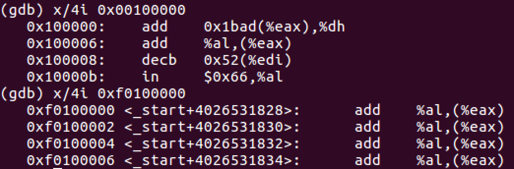
在执行完6次si后，终于 0x00100000 和 0xf0100000 处内容相同。
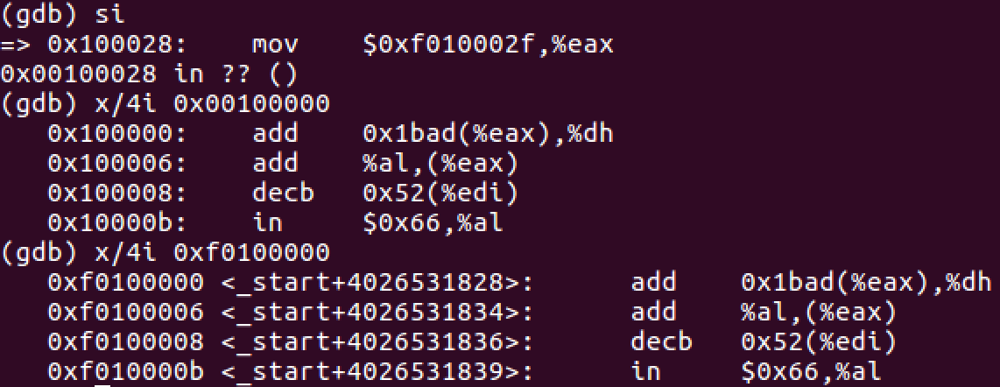
也就是说，0xf0100000 的内容被映射到 0x00100000。
注释 movl %eax, %cr0 后，make clean 之后重新编译，再运行。一步步 si 后出现了问题。
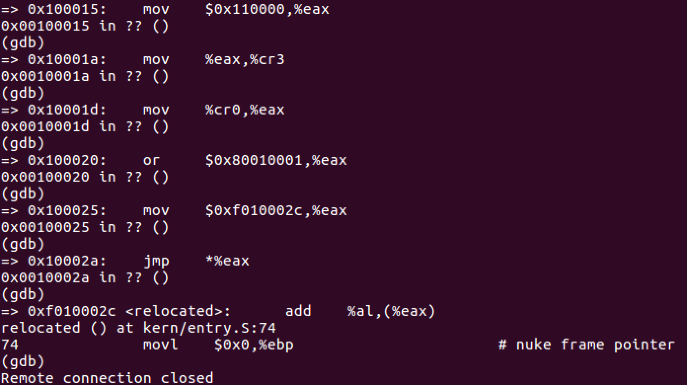
在0x10002a处的jmp指令，要跳到 0xf010002c 处， 然而因为没有分页管理，不会进行虚拟地址映射到物理地址的转化，再另一个窗口可以看到错误信息，访问地址超出内存。
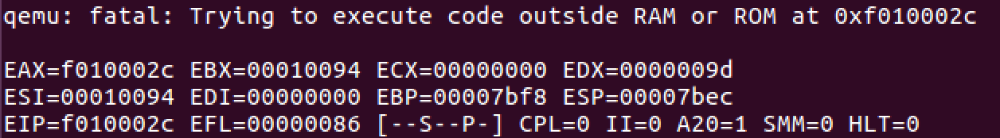
格式化输出到控制台
分析 kern/printf.c, lib/printfmt.c, 和 kern/console.c 的代码。
Exercise 8
完成指定输出”%o”格式字符串的代码。
首先分析 kern/printf.c, lib/printfmt.c, 和 kern/console.c 的关系。
kern/printf.c里的 vcprintf, cprintf 都调用 lib/printfmt.c 的 vprintfmt。kern/printf.c里的 putch 调用 kern/console.c 的 cputchar。lib/printfmt.c 里也有 putch。
所以 kern/printf.c 和 lib/printfmt.c 依赖 kern/console.c。
首先先看看 putch 里调用的 cputchar。
|
|
cputchar调用的是 cons_putc, 所以 cons_putc 才是关键。 cons_putc 的功能是输出一个字符到控制台。cons_putc 又是由 serial_putc， lpt_putc 和 cga_putc 组成。
因此，要先来看 serial_putc。
|
|
它控制的是端口0x3F8，inb 读取的是 COM1 + COM_LSR = 0x3FD 端口，outb 输出到了 COM1 + COM_TX = 0x3F8。
详细端口信息查看这个PORTS.LST。
在 inb(COM1 + COM_LSR) 之后， 有 & COM_LSR_TXRDY 这个操作。 !(inb(COM1 + COM_LSR) & COM_LSR_TXRDY) 其实是为了查看读入的数据的第6位，也就是 PORTS.LST 中 03FD 中提到的 bit 5 是否为1。 如果为1，上面的语句结果就是0，停止for循环。这个 bit 5 是判断发送数据缓冲寄存器是否为空。
outb 是将端口 0x3F8 的内容输出到 c。当 0x3F8 被写入数据，它作为发送数据缓冲寄存器，数据是要发给串口。
所以serial_putc是为了把一个字符输出到串口。
再来看 lpt_putc。
|
|
将字符给并口设备。
最后一个是 cga_putc。
|
|
首先 !(c & ~0xFF) 是否在 0 ~ 255 之前。\b很容易理解，就是退格键，让缓冲区 crt_buf 的下标 crt_pos 减1。其他的同理，case都是格式操作。default就是往缓冲区里写入字符c。之后就是当缓存超过CRT_SIZE，就是用 memmove 复制内存内容。
最后四句代码是将缓冲区的内容输出到显示屏。
内联汇编tips
这里提一下内联汇编。 inb 和 outb 都是内联汇编。其中 inb 函数
|
|
“__asm__“表示后面的代码为内联汇编， “__volatile__“表示编译器不要优化代码。括号里是汇编指令。
内联汇编的模板是：__asm__(汇编语句模板: 输出部分: 输入部分: 破坏描述部分)。 共四个部分：汇编语句模板，输出部分，输入部分，破坏描述部分，各部分使用”:”格开，汇编语句模板必不可少， 其他三部分可选，如果使用了后面的部分，而前面部分为空，也需要用”:”格开，相应部分内容为空。如上面程序则只是用了前三部分。
“inb %w1,%0”表示汇编语句模板， “=a” (data)是输出部分，”d” (port)是输入部分。本例中只有两个：“data” 和“port”，他们按照出现的顺序分别与指令操作数 “%0”,“%1”对应。每个输出操作数的限定字符串必须包含“=”表示他是一个输出操作数。例如”=a” (data)就是一个输出操作数，其限定字符串为”=a”，(data)就是C语言变量。
之后来看 lib/printfmt.c 的代码。首先来看 kern/printf.c 里提到的 vprintfmt函数。
代码太长了，简单点先说一下它的四个输入参数。
- void (*putch)(int, void*) 函数指针，一般调用输出到屏幕上的函数
- void *putdat 输入字符要放的内存地址指针
- const char *fmt 格式化字符串
- va_list ap 多个输入参数
在vprintf里传入的参数putdat是cnt的地址，cnt是用来做计数器的。cprintf功能类似。
分析完三个文件，回到题目，要去实现%o的格式化输出。在 lib/printfmt.c 可以看到要填写的地方。参考上面 case 'u' 的写法。
|
|
修改完以后保存，make clean 之后运行，会发现启动以后，qemu里JOS启动时会出现这样一行字。
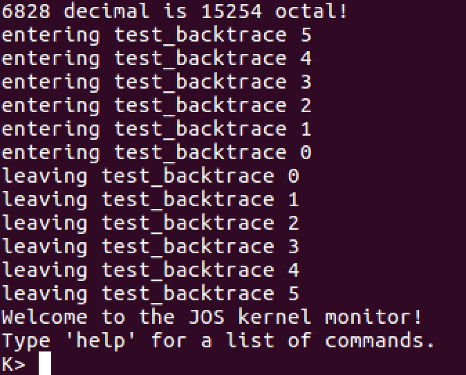
第一行完成了6828转八进制。
解释 console.c 中的这段代码
|
|
简单点说就是当字符长度超过CRT_SIZE， 证明屏幕放不下了，需要页面向上滚动一行。
观察下面的代码，分析fmt和ap指向什么。
|
|
fmt 指向的是格式字符串 “x %d, y %x, z %d\n”，ap 指向的是参数 x, y, z。
将这段代码加入到 kern\monitor.c 并重新编译运行，即可显示结果。
运行这段代码。
|
|
输出是 He110 World。 这很神奇。首先 %x 是指十六进制，所以将 57616 转为十六进制就是 e110。在看后面， &i 是指 i 的地址， %s是指输出为字符串，所以输出的应该是变量i所在地址的字符串。其实就是将i转换为字符串来输出。因为x86是小端模式，并且是int类型，所以存放的方式是四个字节，所以就会将i拆分开来，变成 0x72, 0x6c, 0x64, 0x00. 所以转换为字符就是rld\0，所以得到了上面的输出结果。
运行以下代码。
|
|
结果是 x=3 y=-267380708，y出问题是因为没有被指定值，所以输出的是一个不确定的值。
堆栈
最后这部分，要研究C语言是如何在x86框架上使用堆栈的。需要查看指令寄存器(IP)的值的变化。
Exercise 9
研究内核是在哪初始化堆栈，找出堆栈存放在内存的位置。内核是如何保存一块空间给堆栈的？堆栈指针指向这块区域的哪儿？
看了几个文件以后，发现在 kern/entry.S 中提到了设置堆指针和栈指针。
|
|
为了查看堆的位置，所以要使用gdb，同样还是 b *0x10000c 打断点进入 entry。 si 一步步执行，在 0x10002d: jmp *%eax 之后，下一条指令变为 0xf010002f <relocated>: mov $0x0,%ebp。其实地址应该还是 0x10002f，所以这里的 0xf010002f 是因为开启的虚拟地址。
通过 gdb 发现 0xf0100034 <relocated+5>: mov $0xf0110000,%esp， 也就是说%esp也就是bootstacktop的值为0xf0110000。其中 kern/entry.S 的 KSTKSIZE 应该就是堆栈的大小，通过跳转，发现在 inc/memlayout.h 里提到了堆栈。
|
|
PGSIZE 定义在 inc/mmu.h 中，值为 4096，所以 KSTKSIZE 为 32KB。 使用 info registers 可以查出esp和ebp的值。最高地址为bootstacktop的值，也就是0xf0110000。
x86堆栈指针(esp寄存器)指向堆栈正在使用的最低位置，低于这个位置的空间还没使用。ebp寄存器(基址指针寄存器)与程序有关。详细的内容可以看 CSAPP。
Exercise 10
研究 obj/kern/kernel.asm 中 test_backtrace 向堆栈里压入的信息。
|
|
使用单步调试和 info registers 来查看esp和ebp的变化。
运行test_backtrace前，
|
|
执行的操作为
|
|
总之，这段程序算是递归，递归就是ebp存放返回地址，esp是存放调用时的参数。
现在需要实现mon_backtrace()这个函数，需要显示ebp，eip 和 args。ebp是基址指针，eip是返回指令指针。
简单实现backtrace，实现效果如下
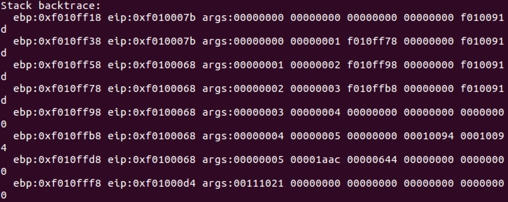
实现如下。
|
|
Exercise 11
修改上面实现的backtrace，要显示详细的函数地址。可以使用 kern/kdebug.c 的 debuginfo_eip()。在查看debuginfo_eip时发现其中有一段代码需要填写。这段代码是填写eip_line。这里用到了写好的二分查找。
|
|
关于 stab 相关内容，查看第三个参考资料，实话说，我对于stab理解的比较模糊。
Exercise 12
将backtrace嵌入终端中，使其可以被调用。只需要修改 kern/monitor.c 的
|
|
End
至此,lab1已经算是完成了，简单了解了操作系统的启动过程，很充实很值得思考。
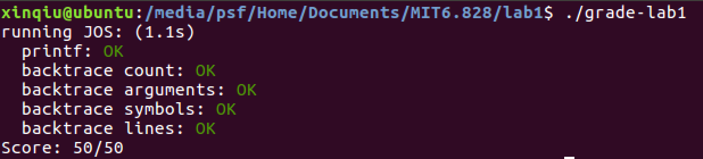